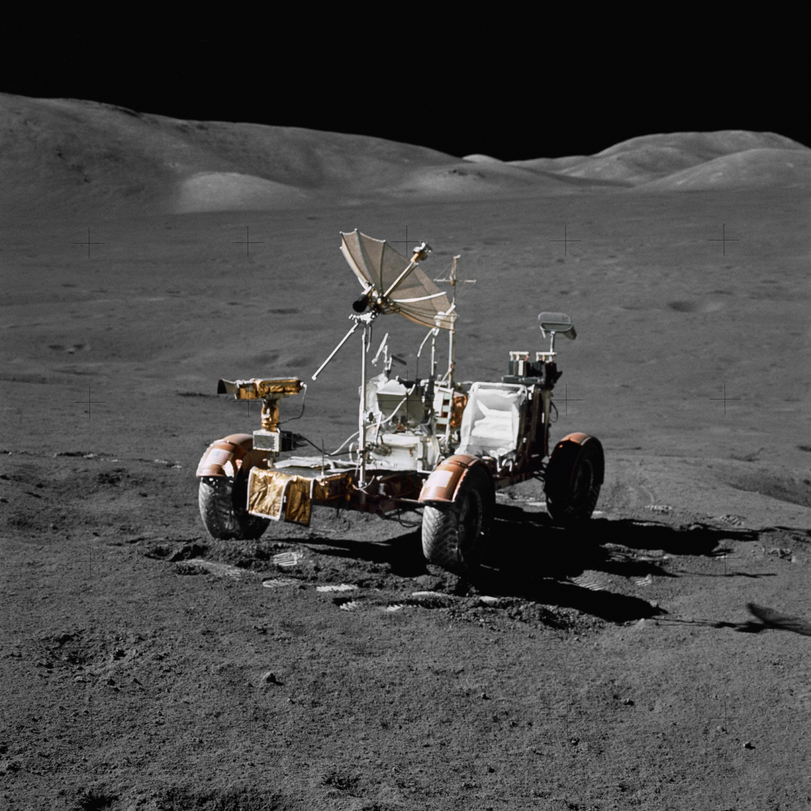
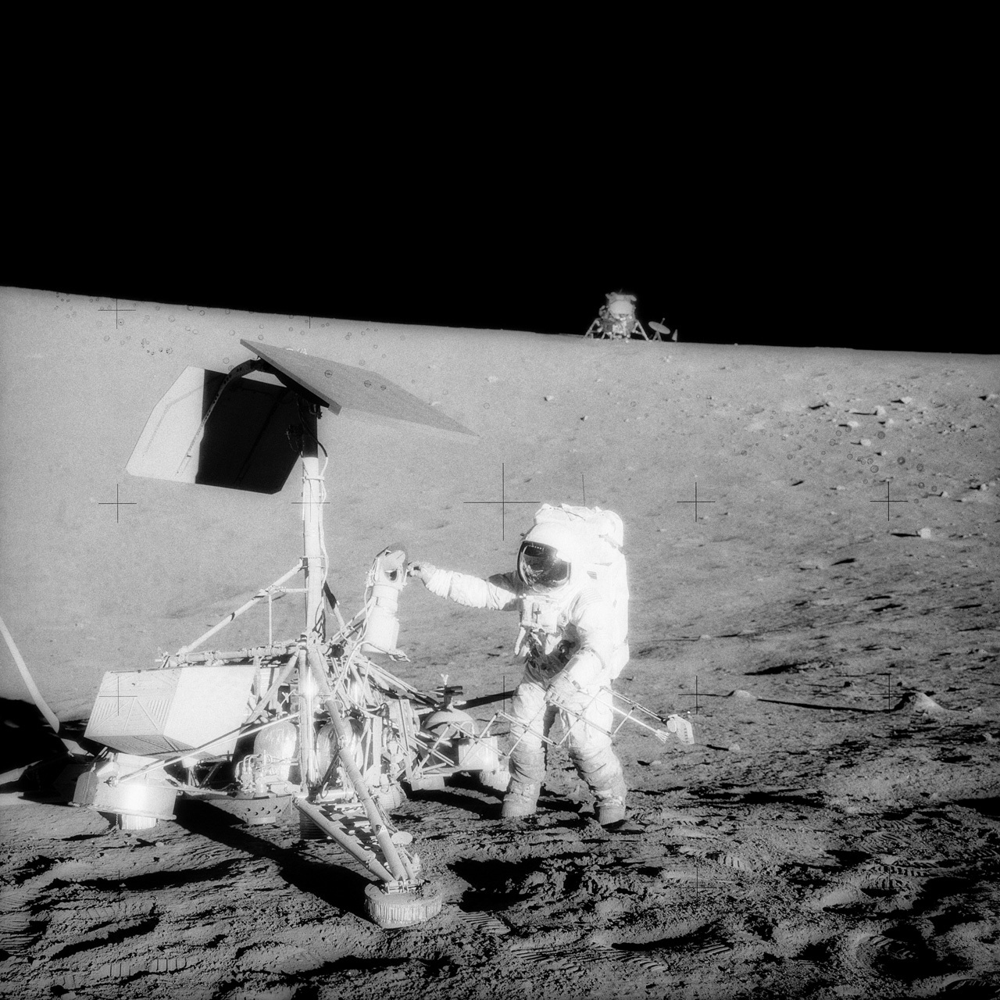
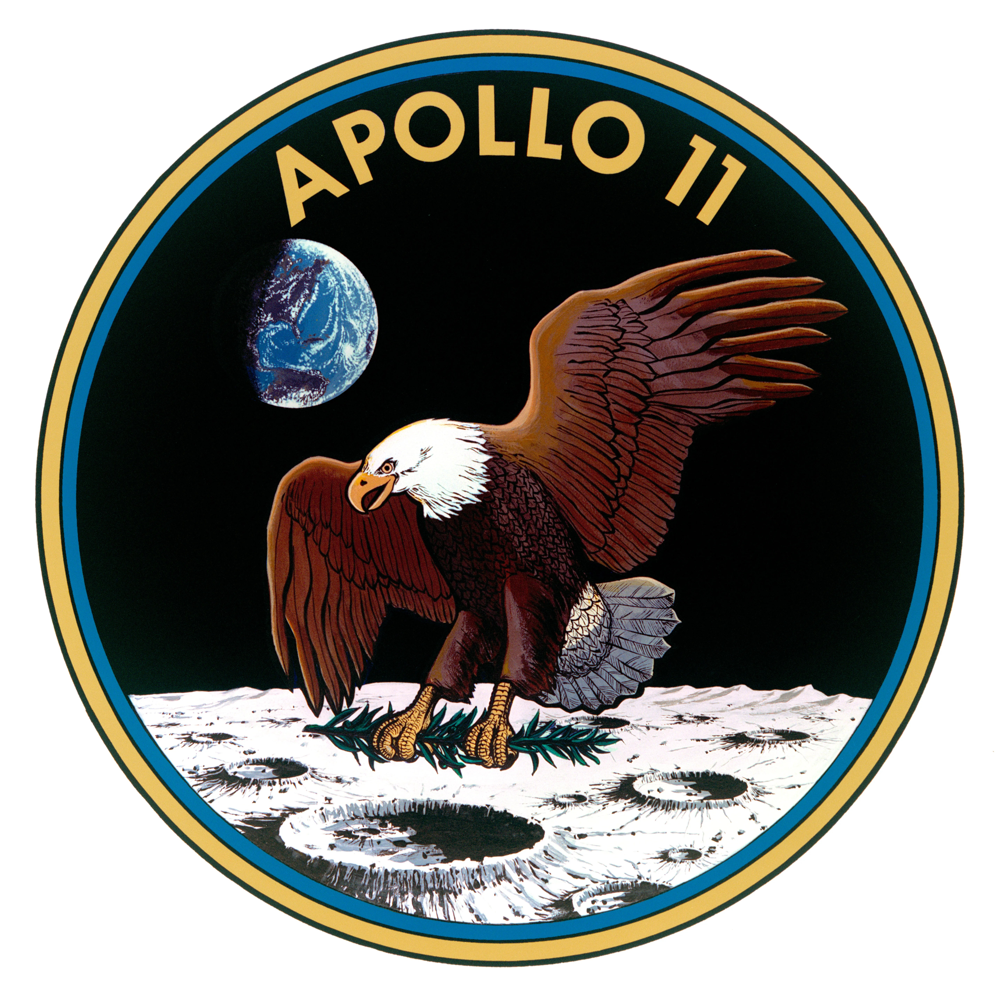

Astronauts and robots left equipment on the Moon more than 50 years ago. Here are three famous pieces and their stories.

The Lunar Roving Vehicle was an electric "moon buggy". Astronauts drove it on Apollo 15, 16 and 17 (1971-1972). When each mission ended, the rover was parked on the Moon and left behind.
Science it made possible: It let astronauts travel far from their lander and collect rocks and soil from many different places.
Where is it now? Three rovers sit at the Apollo 15, 16 and 17 landing sites, silent for more than 50 years.
NASA source: NASA Goddard: The Apollo Lunar Roving Vehicle
Image: NASA

Surveyor 3 was a robot lander that touched down on the Moon in April 1967, before any astronaut had gone there. Its camera sent back thousands of pictures. In November 1969, Apollo 12 astronauts walked to it and brought home its camera and some parts.
Science it made possible: It checked that the Moon's soil was strong enough for landings. Its returned parts showed scientists how materials survive on the Moon.
Where is it now? In a crater on the Moon's Ocean of Storms, near the Apollo 12 landing site.
NASA source: NASA Science: Surveyor 3
Image: NASA

Eagle landed Neil Armstrong and Buzz Aldrin on the Moon on July 20, 1969.When they flew home, the bottom half of Eagle, called the descent stage,stayed behind to act as a launch pad for the top half.
Science it made possible: The Apollo 11 astronauts brought back about21 kg of Moon rocks. They also left a laser reflector that scientists still use to measure the distance to the Moon.
Where is it now? At Tranquility Base, in the Sea of Tranquility. A plaque is attached to one of its legs.
NASA source: NASA: Apollo 11 Mission Overview
Image: NASA